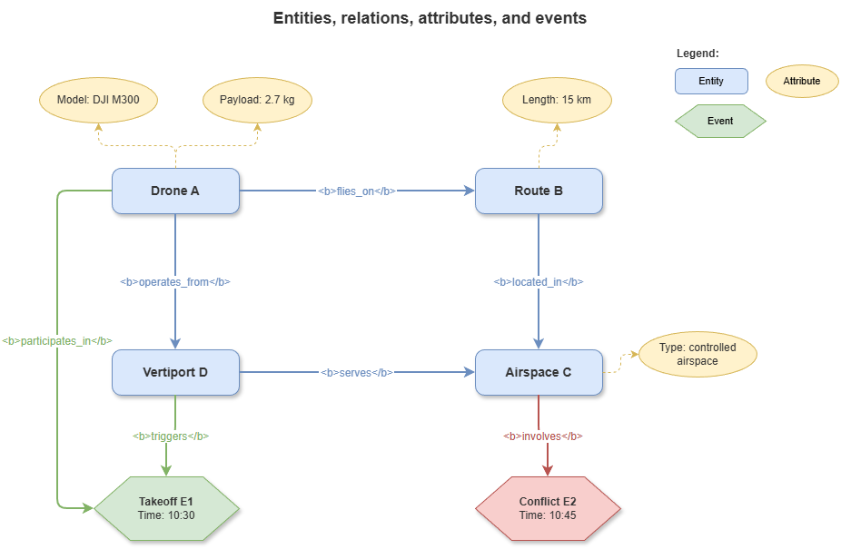
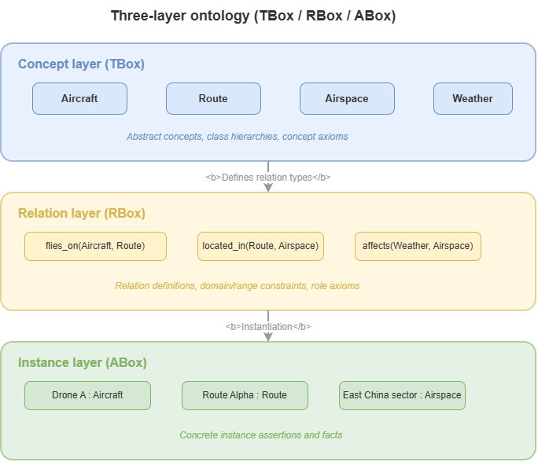
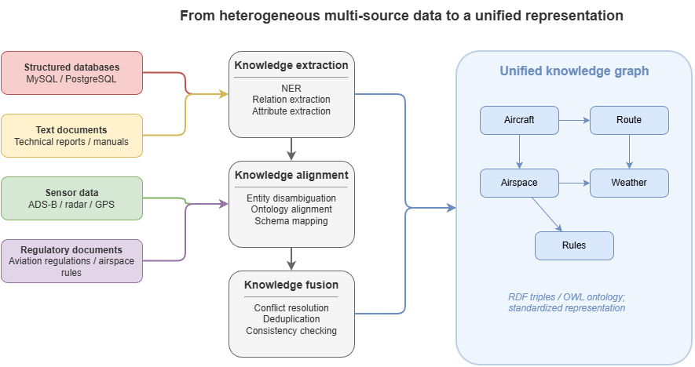

Having established formal logic and rule systems in Chapter 2, this chapter addresses knowledge graphs as the structured representation layer needed before complex reasoning can scale. Facing domains such as low-altitude traffic or autonomous driving, pure logical inference alone hits a “no fuel” problem: we first need a machine-understandable, structured, extensible way to represent massive domain entities and their interactions. Knowledge graphs (KGs) exist to solve that knowledge representation problem. This chapter introduces KG foundations and shows how to abstract messy reality into a normative symbolic network, laying data and knowledge groundwork for later neuro-symbolic reasoning.
3.1 Basic concepts of knowledge graphs: entities, relations, attributes, events#
A knowledge graph is, in essence, a large-scale semantic network in graph form. Formally, a KG is often a directed multigraph \(G = (E, R, F)\) where \(E\) is a set of entities, \(R\) a set of relations, and \(F\) a set of facts (triples).
For physical systems such as low-altitude traffic, core elements divide into four types:
Entity: A concrete thing or abstract concept that can stand on its own in the world; appears as a node in the graph—e.g. UAS
UAV-A102, airspace gridGrid-3A, vertiportVertiport-X.Relation: A semantic link between entities—a directed edge—e.g.
located_inbetween a UAS and airspace,spatially_adjacent_tobetween two UAS.Attribute: Key–value metadata describing intrinsic properties of entities or relations, linking entities to literals (numbers, strings)—e.g. UAS
current_speed = 15 m/s, airspacealtitude_ceiling = 120 m.Event: A dynamic process with time, place, and participants—often modeled as a composite entity, e.g. a
Takeoff_Eventwith participating UAS, site, and timestamp.
3.2 RDF, OWL, SPARQL, and graph query languages#
For standard exchange and machine reasoning, the W3C defines Semantic Web standards. Fluency in them underpins trustworthy domain representation.
RDF (Resource Description Framework): The bottom layer. RDF abstracts all statements as (subject, predicate, object) triples—e.g.
(UAV-01, belongs_to, Logistics_Company_A). This minimal structure enables heterogeneous data fusion.OWL (Web Ontology Language): Built on RDF, OWL adds richer logical expressiveness: complex class relationships (intersection, union, disjointness), property characteristics (transitivity, symmetry, functionality). In low-altitude traffic, OWL can state that fixed-wing and rotary-wing UAS are disjoint, or that physical collision is symmetric. OWL is key syntax for static logical validation and trust-oriented certification.
SPARQL: The standard query language for RDF data—analogous to SQL for relational stores. SPARQL uses graph pattern matching to extract subgraphs or entity sets—e.g. retrieve “all logistics UAS currently within 500 m of a no-fly zone boundary.”
3.3 Ontology construction: concept layer, relation layer, constraint layer#
An ontology is a strict, formal specification of knowledge in a domain—like a schema or meta-model for the KG. High-quality domain ontologies usually span three layers:
Concept layer (TBox): Vocabulary and class hierarchy—answers “what kinds of objects exist in this domain?” Often built top-down or bottom-up as a taxonomy—e.g.
Aircraftparent ofUAVandManned_Aircraft.Relation layer: Legitimate links between concepts—object properties (entity–entity) and data properties (entity–literal). Each relation needs clear domain and range—e.g.
has_pilotdomainManned_Aircraft, rangePerson.Constraint layer: Business rules and physical limits—the soul of safety-critical graphs. Axioms and cardinality constraints ensure facts respect reality and regulation—e.g. “a UAS has at most one current waypoint at a time.”
3.4 Event graphs, scene graphs, and temporal knowledge graphs#
General KGs are often static; governance in low-altitude traffic or driving is highly dynamic and spatiotemporally intertwined. Advanced graph variants include:
Event graph: Emphasizes event evolution, causality, and temporal order. Nodes include events—e.g. “weather shock” causes “route replanning,” which causes “UAS delay.”
Scene graph: From computer vision—a snapshot of spatial topology at a time. In UAM, captures static obstacles, moving aircraft, and relative relations (“above,” “near”) in a region at an instant.
Temporal knowledge graph (TKG): Extends triples with time, often as quadruples \((h, r, t, \tau)\) where \(\tau\) is a time or interval when the fact holds—e.g.
(UAV-A, occupy, Grid-5, [10:05–10:15]). TKGs are the core data structure for later dynamic conflict prediction and evolutionary reasoning in this book.
3.5 From multi-source heterogeneous data to unified knowledge representation#
City-scale low-altitude governance ingests fragmented sources: ADS-B trajectories, radar point clouds, structured flight plans, semi-structured METAR-style messages, unstructured policy text. Unification requires information extraction and knowledge fusion:
Entity recognition and alignment: Identify business entities per source—e.g. align radar track
Track_ID_992with registeredUAV-SF-001via entity resolution as one aircraft.Relation extraction: Compute relations from logs or spatial data—e.g. Euclidean distance below threshold yields
(UAV-1, risk_of_collision, UAV-2).Knowledge mapping: Scripts (e.g. R2RML) or deep models map relational/time-series stores into RDF triples or property graphs conforming to the ontology.
3.6 Knowledge graph updating, alignment, and consistency maintenance#
Trust depends on consistent base knowledge. Under high-frequency change, maintenance is critical:
Streaming updates: Batch writes for position/velocity fail real-time needs; streaming graph engines incrementally update temporal edges and attributes at millisecond scale for monitoring.
Knowledge alignment: Integrating external KGs (e.g. city-wide building BIM) needs ontology mapping and instance matching to resolve naming and semantic clashes.
Consistency checking: After updates, run ontology constraints or rule sets (e.g. SWRL). If perception wrongly asserts one UAS in two distant cells simultaneously, the reasoner should alert and mark untrusted knowledge.
3.7 From general KGs to domain-specific KGs#
KG evolution moves from general to domain-specific use—important for scoping neuro-symbolic design in this book.
General KGs (e.g. Wikidata, DBpedia, Freebase): broad human commonsense; very wide, relatively shallow, tolerant of occasional errors—cost is often degraded search or QA experience.
Domain-specific KGs (e.g. low-altitude SkyKG, medical, industrial control KGs): clear boundaries, tight logic, very high precision. In safety-critical settings graphs must be not mere concept piles but digital constraint sets obeying physics and procedures.
The shift from general to domain KGs marks AI applications moving from weakly constrained commonsense QA toward strongly constrained trustworthy governance. With structured knowledge in place, later parts discuss how deep learning and graph learning grow on this base and how neuro-symbolic fusion unfolds.
3.8 Supplement: knowledge graph embeddings and graph completion#
Earlier sections treat KGs as discrete symbol structures—semantically clear and interpretable but awkward as direct input to neural training. Knowledge graph embedding (KGE) maps entities and relations into low-dimensional continuous space so graph knowledge joins gradient-based, end-to-end learning.
3.8.1 Knowledge graph embeddings#
The core idea: learn a vector \(\mathbf{e} \in \mathbb{R}^d\) (or \(\mathbb{C}^d\)) for each entity \(e \in E\), a vector or matrix for each relation \(r \in R\), and a scoring function \(f(h,r,t)\) that scores up true triples and scores down false ones. Methods differ mainly in \(f\):
TransE: Relations as translations in embedding space: \(f(h,r,t) = -\|\mathbf{h} + \mathbf{r} - \mathbf{t}\|\). Intuition: if \((h,r,t)\) holds, \(\mathbf{h} + \mathbf{r} \approx \mathbf{t}\). Simple and efficient but weak on one-to-many and many-to-many patterns.
DistMult: Bilinear score \(f(h,r,t) = \mathbf{h}^\top \mathrm{diag}(\mathbf{r})\, \mathbf{t}\) with diagonal relation matrices. Richer interaction but symmetric in head/tail: \(f(h,r,t) = f(t,r,h)\), ill-suited to directed relations.
ComplEx: Embeddings in complex space \(\mathbb{C}^d\): \(f(h,r,t) = \mathrm{Re}(\mathbf{h}^\top \mathrm{diag}(\mathbf{r})\, \bar{\mathbf{t}})\) with \(\bar{\mathbf{t}}\) the conjugate of \(\mathbf{t}\). Asymmetry enables directed relations (e.g. “jurisdiction,” “belongs to”) while still expressing symmetric relations.
RotatE: Relations as rotations in complex space: \(\mathbf{t} = \mathbf{h} \circ \mathbf{r}\) with element-wise product and \(|r_i| = 1\). Captures symmetric, antisymmetric, transitive, and compositional patterns (\(r_1 \circ r_2 \approx r_3\)), with strong benchmark performance.
3.8.2 Graph completion and link prediction#
A direct use of KGE is link prediction: given incomplete \((h,r,?)\) or \((?,r,t)\), rank candidate entities by score to impute missing facts. Domain KGs built from experts and structured extraction are often incomplete—e.g. missing some “UAS model → applicable airspace type” links. Link prediction can suggest missing associations. Evaluation uses Mean Rank, MRR, and Hits@K.
3.8.3 Property graph model#
Section 3.2’s RDF model centers triples and pairs naturally with OWL and SPARQL—cornerstones of the Semantic Web. In engineering, many databases (Neo4j, Amazon Neptune) use property graphs: nodes and edges carry arbitrary key–value properties without reifying every attribute as extra triples. Cypher-style queries read closer to natural patterns (e.g. MATCH (u:UAV)-[:LOCATED_IN]->(g:Grid) RETURN u). Property graphs are often chosen for flexibility and query efficiency; for cross-system interoperability and formal reasoning, RDF/OWL remains hard to replace. Design should trade off interoperability, reasoning, and engineering efficiency.
3.8.4 Connection to neuro-symbolic reasoning#
KGE bridges symbol and neural views: embeddings turn discrete knowledge into continuous geometry usable as features or regularizers; geometric structure (translation, rotation, bilinear maps) encodes relational semantics traceable to symbolic logic. Later chapters combine embeddings with GNNs, rule learning, and logical constraints for frameworks that generalize yet stay logically structured—“symbols supply structure, embeddings supply generalization” is a central pillar of the technical line in this book.
Chapter summary#
This chapter developed knowledge graphs and domain knowledge representation: entities, relations, attributes, and events as basic units; RDF, OWL, and SPARQL as standards; ontology layers for structure; event, scene, and temporal graphs for dynamics; multi-source fusion, alignment, update, and consistency for real deployment; the move from general to domain-specific high-stakes KGs; and KGE/link prediction as a systematic path from symbols to vectors for neuro-symbolic fusion.
Key concepts#
Knowledge graph: Semantic network of entities, relations, attributes, and facts.
RDF / OWL / SPARQL: Representation, semantic constraints, and standard querying.
Ontology: Formal meta-framework for domain concepts, relations, and constraints.
Temporal knowledge graph: KG with explicit time for dynamic facts.
Domain-specific KG: High-precision, high-consistency base for constrained scenarios.
Knowledge graph embedding: Learning continuous representations of entities and relations.
Link prediction: Graph completion by ranking candidate relations or entities.
Property graph: Graph model with rich properties on nodes and edges for engineering use.
Discussion questions#
Why are domain-specific KGs more valuable than general KGs in safety-critical settings?
What roles do concept, relation, and constraint layers play in an ontology?
If a low-altitude KG ingests high-frequency telemetry and regulatory text, what is the hardest data-fusion challenge?
Case study#
Urban low-altitude corridor risk query: represent aircraft, corridors, no-fly zones, weather disturbance, and mission priority as nodes and relations; use SPARQL to retrieve a time-bounded subgraph relevant to a target mission, showing how scattered data becomes structured evidence.
Figure suggestions#
Figure 3-1: The four basic building blocks—entities, relations, attributes, events.

Figure 3-2: Three ontology layers—concept, relation, constraint.

Figure 3-3: Pipeline from multi-source heterogeneous data to unified knowledge.

Formula index#
Basic graph: \(G = (E, R, F)\)
TKG quadruple: \((h, r, t, \tau)\)
TransE: \(f(h,r,t) = -\|\mathbf{h} + \mathbf{r} - \mathbf{t}\|\)
DistMult: \(f(h,r,t) = \mathbf{h}^\top \mathrm{diag}(\mathbf{r})\, \mathbf{t}\)
ComplEx: \(f(h,r,t) = \mathrm{Re}(\mathbf{h}^\top \mathrm{diag}(\mathbf{r})\, \bar{\mathbf{t}})\)
RotatE: \(\mathbf{t} = \mathbf{h} \circ \mathbf{r}\), \(|r_i| = 1\)
Note: emphasis is on graph objects and semantic layers and core scoring forms, not heavy derivation.
References#
Hogan, A., et al. (2021). Knowledge Graphs. ACM Computing Surveys, 54(4), Article 71.
Bordes, A., Usunier, N., Garcia-Duran, A., Weston, J., & Yakhnenko, O. (2013). Translating Embeddings for Modeling Multi-relational Data. Advances in Neural Information Processing Systems (NeurIPS).
Berners-Lee, T., Hendler, J., & Lassila, O. (2001). The Semantic Web. Scientific American, 284(5), 34–43.
Suchanek, F. M., Kasneci, G., & Weikum, G. (2007). YAGO: A Core of Semantic Knowledge. Proceedings of the 16th International Conference on World Wide Web (WWW).
Vrandečić, D., & Krötzsch, M. (2014). Wikidata: A Free Collaborative Knowledgebase. Communications of the ACM, 57(10), 78–85.
Ji, S., Pan, S., Cambria, E., Marttinen, P., & Yu, P. S. (2022). A Survey on Knowledge Graphs: Representation, Acquisition, and Applications. IEEE Transactions on Neural Networks and Learning Systems, 33(2), 494–514.
Bollacker, K., Evans, C., Paritosh, P., Sturge, T., & Taylor, J. (2008). Freebase: A Collaboratively Created Graph Database for Structuring Human Knowledge. Proceedings of ACM SIGMOD.